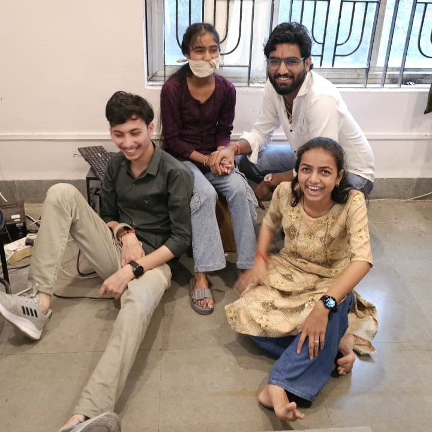
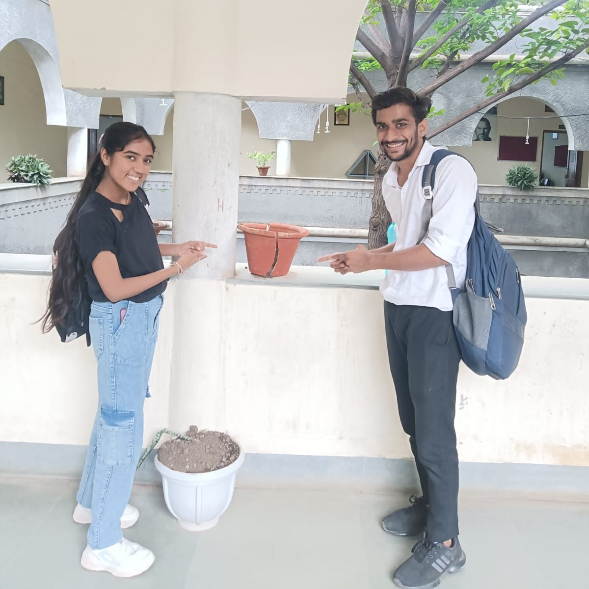
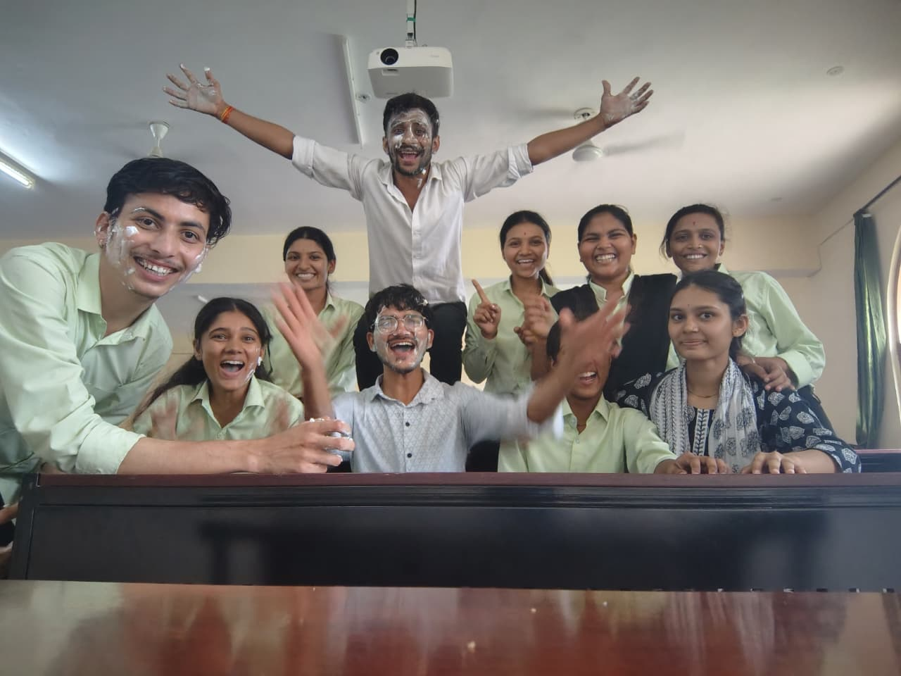
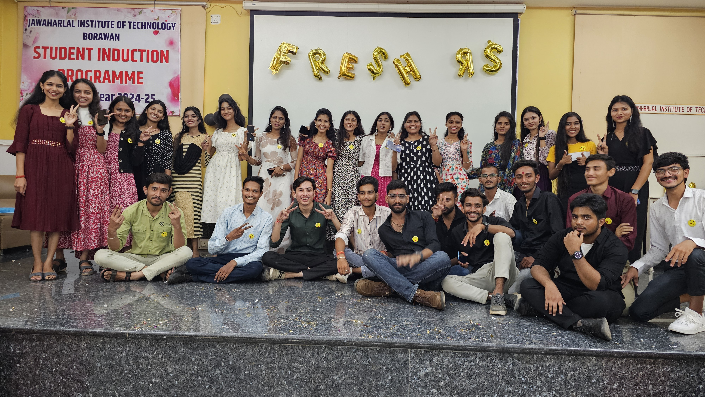
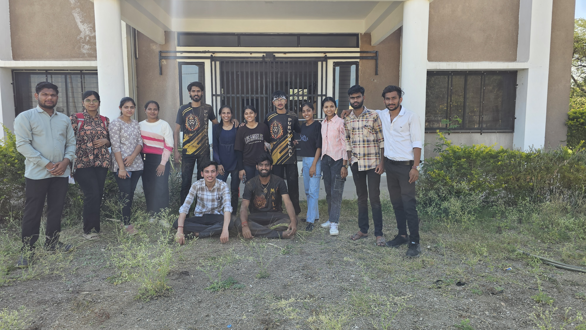
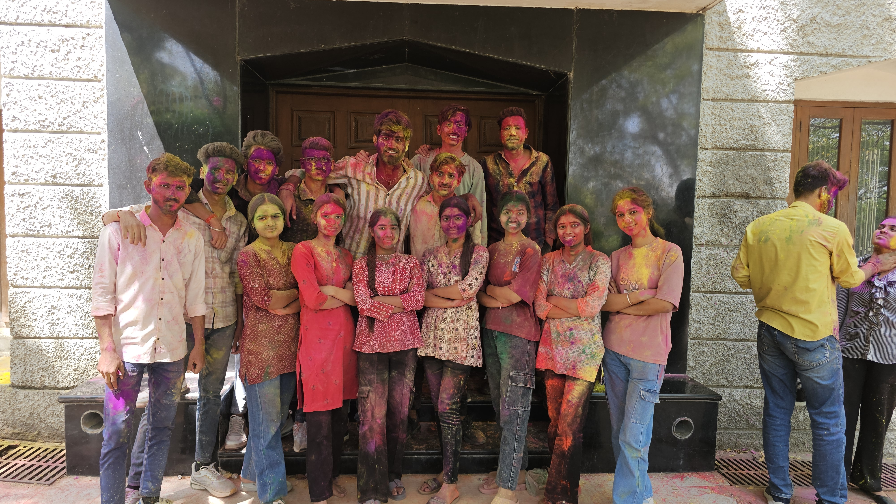
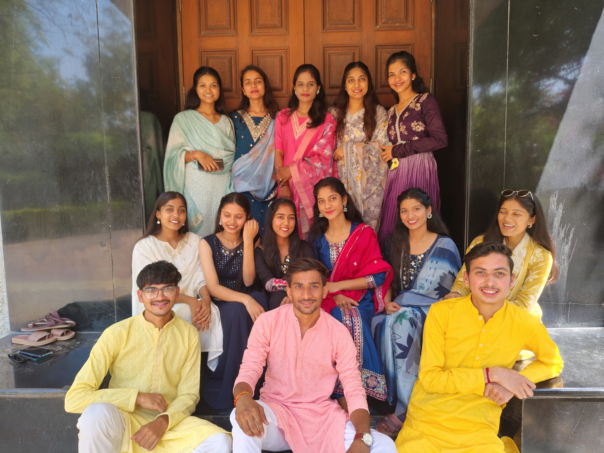
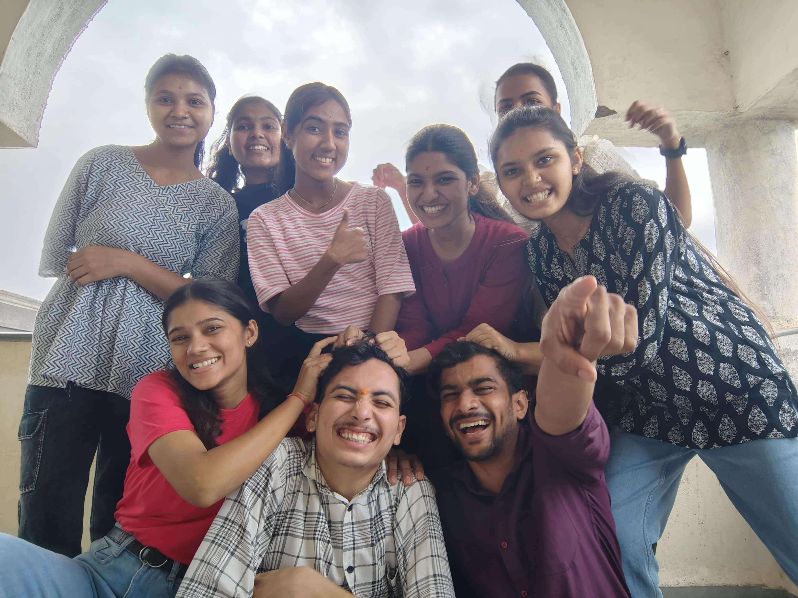
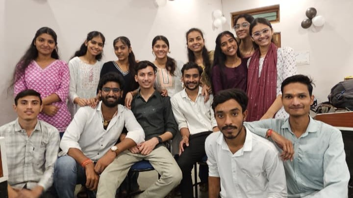

The Evidence
A few pictures that somehow escaped our parents' eyes. These are the moments we'll never forget.












2 Saal. 4 Semesters. Unlimited Chai. Countless 'Qisse'.
A fun-filled tribute to our amazing journey from the MCA Batch of 2024.
Some legendary incidents that deserve to be in the Hall of Fame. We hope the statute of limitations has expired!
"Sir, bas 2 minute!" - The battle cry of our batch. We fought bravely against deadlines, powered by 3 AM Maggi and a prayer.
The legendary defense mechanism during vivas. 99% of the time it was a lie, but we said it with 100% confidence.
Calculating the exact number of classes we could miss without getting debarred. That was our first real Data Analytics project.
Some unofficial awards for the legends of our batch.
Tulja Yadav
Shyam Patidar
Harsh Gupta
A few pictures that somehow escaped our parents' eyes. These are the moments we'll never forget.









Jokes aside, we couldn't have done it without our amazing faculty. Thank you for tolerating our bugs and nurturing our features.
To all our professors and the department staff, thank you for your endless patience, guidance, and for believing in us even when our code (and our attendance) was questionable. You are the foundation of our success.